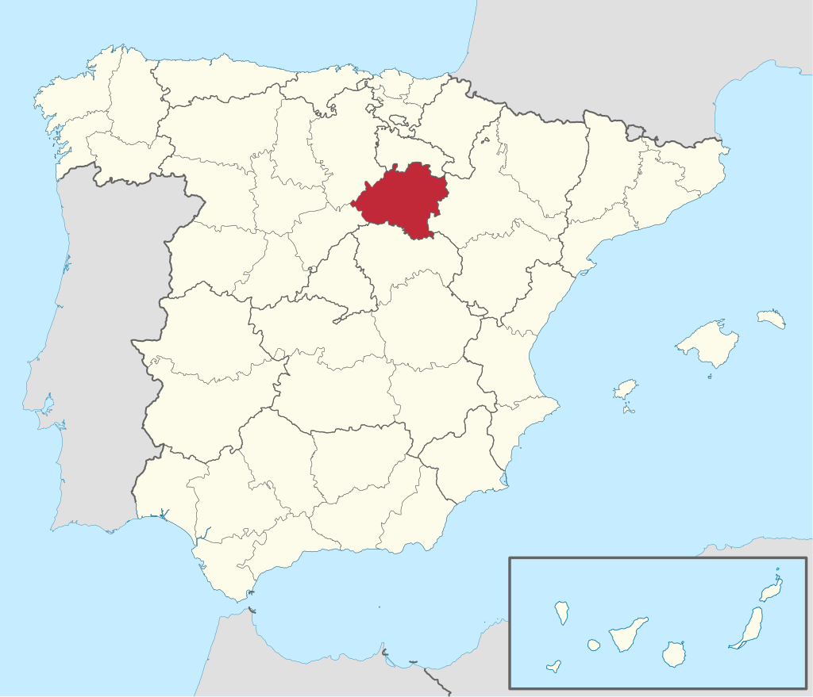
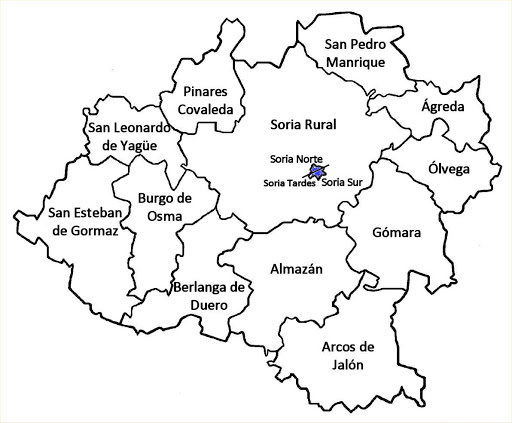
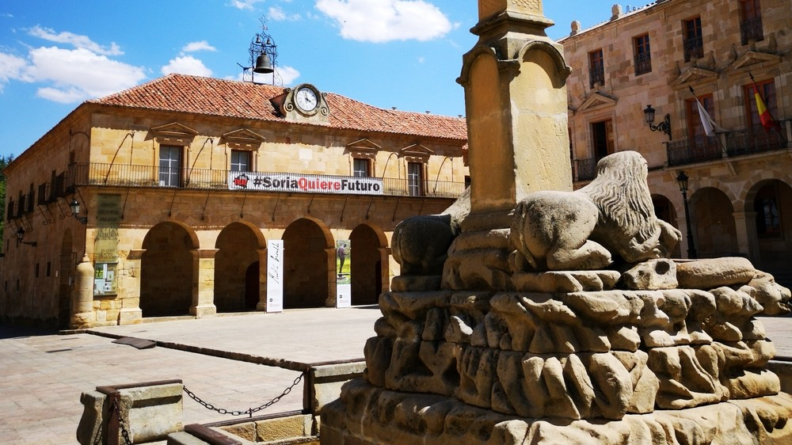
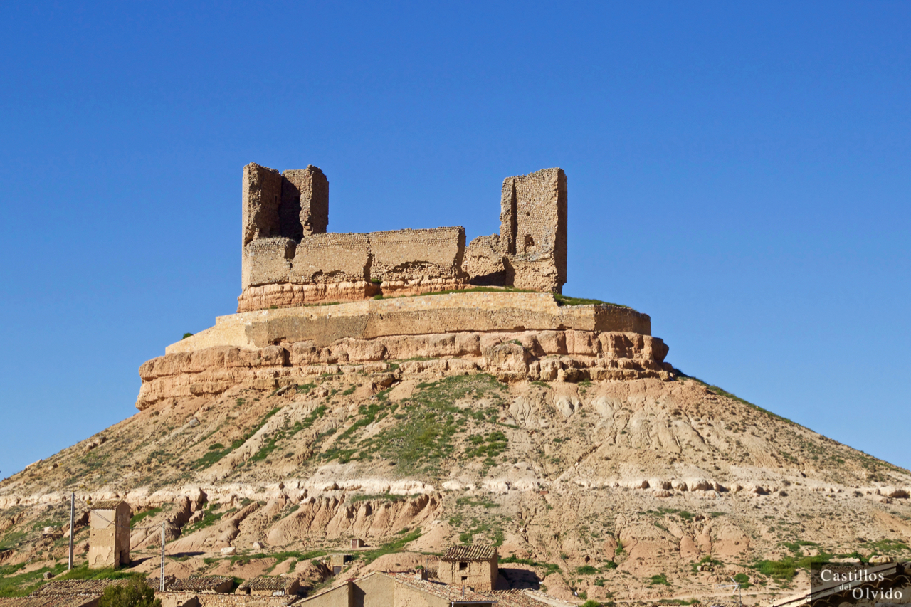
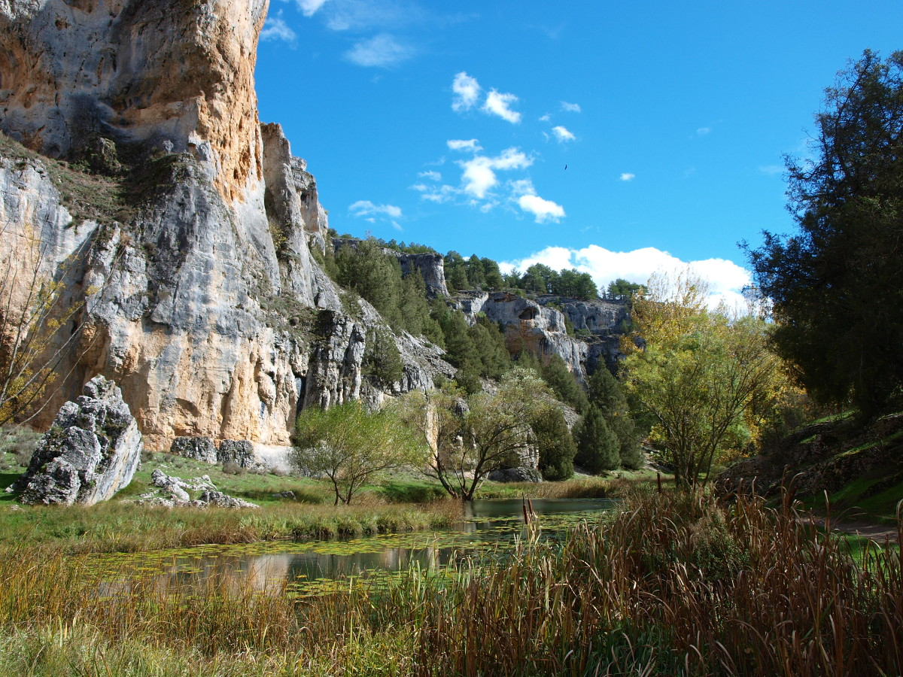
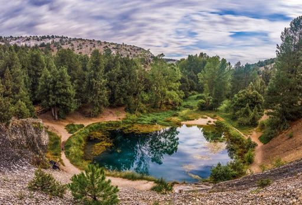

Informacion
Localización
Localidades principales
Geografía de la provincia
Historia
Cultura
Naturaleza
Tradiciones
Otros aspectos de interés
Soria
_______________________________________________________________________________________________________________________________________________________________
Localización
Soria es un municipio y una ciudad española, situada en el este de la comunidad autónoma de Castilla y León y capital de la provincia homónima. Su población
es de 39.398 habitantes (INE, 2019),5 el 44,4 % de la población provincial. El término municipal tiene una superficie de 271,77 km², con una densidad de
144,97 hab./km². Situada a unos 1063 metros de altitud, es la segunda capital de provincia española más alta sobre el nivel del mar, tras Ávila.

_______________________________________________________________________________________________________________________________________________________________
Localidades principales
Localización Province Soria : País España, Comunidad Autónoma Castilla y León.
Grandes ciudades : Soria, Almazán, El Burgo de Osma, Ólvega, San Esteban de Gormaz, Ágreda, Golmayo, San Leonardo de Yagüe, Covaleda, Arcos de Jalón, Duruelo
de la Sierra, Berlanga de Duero, Vinuesa, Navaleno, Garray, Medinaceli, Langa de Duero, San Pedro Manrique, Almarza, Quintana Redonda, Los Rábanos,
Tardelcuende, Cabrejas del Pinar, Gómara, Cidones, Abejar, Matamala de Almazán, Santa María de Huerta, El Royo, Borobia, Almenar de Soria, Deza, Morón
de Almazán, Valdeavellano de Tera, Sotillo del Rincón, Almajano, Monteagudo de las Vicarías, Cubo de la Solana, Fuentearmegil y Alconaba.

_______________________________________________________________________________________________________________________________________________________________
Geografía de la provincia
Ubicacion
El municipio de Soria está a orillas del río Duero, en su curso alto, sobre las estribaciones del Sistema Ibérico. La ciudad de Soria se extiende sobre dos cerros (el cerro del Castillo, y el cerro del Mirón) y la cañada que los separa, en la margen derecha del Duero. Pese a que hay un barrio en la margen izquierda del Duero (al otro lado del Puente de Piedra), la ciudad se ha extendido hacia el oeste.Además de la ciudad de Soria, en el término municipal se encuentran el barrio Las Casas, a 1,2 kilómetros de la ciudad, y tres localidades: Oteruelos, Pedrajas y Toledillo, situadas a varios kilómetros al noroeste. También incluye dos exclaves despoblados, el de los Pinares de Soria al oeste y un pequeño sector en la sierra de Toranzo al este. En su territorio hay tres embalses en el curso del río Duero: Los Rábanos (al sur), Campillo de Buitrago (al noroeste) y La Cuerda del Pozo (en el exclave de Los Pinares de Soria).
El término municipal se extiende un total de 27 240 hectáreas y su altitud oscila entre los 1000 y los 1200 m. Por ejemplo, la ciudad de Soria está a unos 1064 m, el cerro de Santa Ana a 1268 m y el pico del Berrún a 1224 m.18 A grandes rasgos, el relieve está determinado por el río Duero en su curso alto y las sierras que forman parte de las estribaciones del Sistema Ibérico soriano.
Forma parte de la comarca de Soria y se sitúa a 101 kilómetros de Logroño, a 142 kilómetros de Burgos, a 159 kilómetros de Zaragoza, a 178 kilómetros de Pamplona, a 207 kilómetros de Valladolid y a 231 kilómetros de Madrid.
Los límites del territorio que incluye la ciudad son los siguientes:
El exclave de Los Pinares de Soria, ya en las primeras elevaciones de los Picos de Urbión, limita al norte con Regumiel de la Sierra (Burgos), Duruelo de la Sierra, Covaleda, Molinos de Duero y Vinuesa; al este con Cidones; al sur con Vadillo, Cabrejas del Pinar y Abejar; al oeste con Canicosa de la Sierra (Burgos) y Navaleno.
El exclave de la Sierra de Toranzo, que incluye el pico Toranzo (1620 m) limita al norte con Ólvega, al este y al sur con Borobia y al oeste con Noviercas.
Clima
De acuerdo a la clasificación climática de Köppen, Soria cuenta con un clima oceánico de tipo Cfb.19 El invierno se caracteriza por ser largo y frío (3,2 °C en enero), llegándose a producir anualmente unos 83 días de heladas. Por su parte el verano es cálido (20 °C en julio y agosto), con unas temperaturas máximas alrededor de los 28 °C, que en los días de canícula pueden llegar hasta los 35 °C, pero el calor estival se ve suavizado por unas noches frescas (12,4 °C. de mínima en julio). Las precipitaciones son moderadas (512 mm al año) siendo la primavera la estación más lluviosa destacando los meses de abril y mayo; en invierno las nevadas son frecuentes._______________________________________________________________________________________________________________________________________________________________
Historia
Antigüedad y Alta Edad Media
En el monte Valonsadero, en el término del municipio, se encuentran pinturas rupestres datadas entre el año 3000 y 2000 a. C. (Calcolítico-Edad de Bronce). Fueron realizadas por pueblos nómadas que narraban en las paredes hechos cotidianos mezclados con deidades simples.23 Cuentan con la declaración de Bien de Interés Cultural (BIC).En el actual cerro del Castillo se han descubierto restos de un asentamiento de la Edad del Hierro y celtibérico, supeditado este último a la ciudad celtíbera de Numancia, situada a siete kilómetros al norte de la actual ciudad de Soria. Numancia fue la ciudad más importante de los Arévacos, famosa por sus conflictos con Roma en el siglo ii a. C. Al frente de una coalición de celtíberos, derrotó en el año 153 a. C. a un ejército de 30 000 hombres mandados por el cónsul Quinto Fulvio Nobilior, dando inicio a veinte años de luchas intermitentes. Finalmente, Publio Cornelio Escipión Emiliano puso sitio a la ciudad con un largo cerco, capturándola en el verano del año 133 a. C., tras el suicidio de gran parte de su población. Numancia fue repoblada con pueblos celtíberos vecinos, y sufrió nuevas destrucciones durante las Guerras Sertorianas. En el siglo iii comienza su decadencia definitiva, y generalmente se considera que la ciudad dejó de ser ocupada en el siglo iv d. C., aunque nuevos hallazgos sugieren un asentamiento visigodo en el siglo vi d. C.24
En el periodo previo a la Reconquista, cuando estaba bajo dominio árabe, hay varias menciones controvertidas a Soria. En el año 869, Solimán ben Abús se levantó en Medina-Soria contra el emir de Córdoba, quien envió a su hijo, Al-Hakan, para sofocar el alzamiento. En el año 1079, Al-Kádir ofrece Soria y otra población a Alfonso VI.

Es posible que en la actual Soria existiese una población ya durante los siglos x y xi. Miguel Martel da argumentos apoyando esta hipótesis,26 incluyendo la antigüedad de los restos del anacoreta San Saturio, y la mención de dos caballeros sorianos (Álvar Salvadores y Antolín Sánchez) como capitanes del Cid. Algunos investigadores apuntan a la posibilidad de que fuera conquistada por Fernán González (929-970), primer conde independiente de Castilla, y volviese a pasar a manos musulmanas con Almanzor (944-1002).27 En cualquier caso, por aquel entonces Soria sería una población de poca importancia, ya que no es mencionada al fijarse los límites entre las diócesis de Osma y Burgos durante el Concilio de Husillos (1088), ni en otros documentos.27 La falta de menciones a Soria antes del siglo xii puede deberse también a la preponderancia de la cercana Garray, bajo el cerro de la antigua ciudad de Numancia, localidad que fue definitivamente conquistada en el 1076 por el Reino de Navarra.
Entre 1109 y 1114, el rey Alfonso I el Batallador conquistó definitivamente Soria y la repobló. Alfonso I el Batallador concedió, también por esas fechas, el Fuero Breve, el primer reglamento jurídico de la villa que solo conocemos por fuentes indirectas. Fueron los primeros alcaides conocidos los aragoneses Íñigo López (1117-1125) y Fortún López (1127-?). En los siglos siguientes, Soria fue enclave estratégico debido a las luchas por el territorio entre los reinos de Castilla y León, Navarra y Aragón. La separación entre Doña Urraca y Alfonso I dejaría Soria en manos de este último. Alfonso VII, tras la muerte de su madre Urraca en 1126, no tardó en reclamar las plazas de Soria, Almazán y Medinaceli ocupadas por su padrastro Alfonso. A la muerte de este último, en 1134, Soria pasaría a formar parte de Castilla de forma definitiva.
Reinado de Alfonso VIII (1158-1214)
Alfonso VIII nació en Soria, y permaneció ligado a esta villa a lo largo de su vida. La muerte de su padre (Sancho III) ocurrió cuando Alfonso contaba con solo 3 años. Su tutela se la disputaron las grandes casas nobiliarias de los Castro y los Lara. Inicialmente victoriosos, los Lara llevaron al "rey niño" a Soria. Fernando II de León, con ayuda de los Castro, entró en Castilla, invadiendo Toledo y Burgos, y avanzando hacia Soria con el objetivo de que el joven Alfonso le rindiese vasallaje. Sin embargo, Manrique de Lara pudo escapar con Alfonso hacia San Esteban de Gormaz, Atienza y Ávila.29Esta ayuda de los sorianos para mantener la independencia del Reino de Castilla fue agradecida con una serie de privilegios, como el de los Arneses, por el cual cada nuevo Rey de Castilla entregaba a los nobles de la villa cien pares de arneses, armas, escudos y sillas. Este derecho fue respetado hasta el reinado de Fernando VII, aunque en forma de entrega de 350 000 maravedís desde tiempos de los Reyes Católicos.3031 Alfonso VIII otorgó también a Soria el Fuero Extenso, de gran interés dentro de la legislación municipal y que sirvió de base al propio Fuero Real. En este Fuero Extenso ya refleja la organización de la villa en tres instituciones: la de los Doce Linajes, la de Jurados de Cuadrilla y la de los Sexmeros de la Tierra.32
La vinculación de Soria con Alfonso VIII y su mujer Leonor de Plantagenet quedó reflejada en su escudo, y en varios de sus templos. Explica el gran parecido entre la soriana Iglesia de Santo Domingo y la Iglesia de Notre-Dame la Grande de Poitiers, y los frescos representando el asesinato de Tomás Becket hallados en la iglesia de San Nicolás. Es posible que también Leonor de Plantagenet y su entorno trajeran los temas artúricos que inspiraron la simbología de Los Doce Linajes De Soria.33
En 1195, los castellanos sufren una seria derrota en la batalla de Alarcos. El contingente soriano salvó la vida de Alfonso VIII,34 pero no pudo evitar que fuese herido durante la batalla. Aprovechándose de la debilidad castellana, Sancho el Fuerte de Navarra atacó Soria y Almazán.

_______________________________________________________________________________________________________________________________________________________________
Cultura
Semana Santa
Declarada Fiesta de Interés Turístico Regional de Castilla y León.67 Sus tallas se encuentran a la altura de las gandes tallas castellanas (de gran valor artístico en escultura policromada) que participan en la Semana Santa en Castilla y León. Como muestra de ello, se puede contemplar durante la Semana de Pasión la bella imagen del Cristo del Humilladero (siglo xvi), atribuido a Juan de Juni o a su escuela.Fiestas de San Juan
Declaradas Fiesta de Interés Turístico Regional de Castilla y León.68 De larga historia, según algunas interpretaciones es incluso mencionada en el Fuero de Soria de 1110.69 Actualmente se celebran en torno al 24 de junio coincidiendo con el solsticio de verano, comenzando siempre un miércoles y concluyendo la noche del lunes siguiente. La referencia para situar en el calendario estas fiestas es el día de la semana en el que cae el día de San Juan, si coincide en jueves, las fiestas comienzan el miércoles 23, si es cualquier otro día de la semana, las fiestas comienzan el miércoles siguiente. La ciudad se distribuye durante sus fiestas en "las doce Cuadrillas", cada una con el nombre de un Santo. Junto a la figura del toro, las Cuadrillas son las protagonistas de los Sanjuanes y proviene de la antigua distribución medieval de la ciudad, en dieciséis barrios o collaciones. Las Cuadrillas son las encargadas de proveer el toro para el viernes, de repartir las tajadas entre los vecinos que han entrado en Fiestas el sábado y el domingo, de organizar los Agés, de preparar la Caldera y sacar en procesión a los santos de Cuadrilla el Lunes de Bailas.En 2020 debido a la pandemia del Covid-19 y siendo Soria la provincia más afectada de España se decide suspender las fiestas de San Juan por primera vez en la historia.
Fiestas de San Saturio
Fiestas patronales de la ciudad, celebradas del 1 al 5 de octubre, si bien las actividades se extienden a los fines de semana anteriores y posteriores.Carnaval de Soria
Comienza el jueves anterior al Miércoles de Ceniza, el llamado Jueves Lardero, documentado al menos desde el siglo xvii70 Es tradición del Jueves Lardero ir a merendar a los parajes cercanos a la ciudad. En sus orígenes el Jueves Lardero no marcaba el inicio de los carnavales y los chicos reclamaban la gallofa por las casas para poder preparar luego la merienda. También está documentada otra tradición, perdida y recuperada en 2018, que consistía en correr dos toros de fuego construidos en madera el Lunes de Carnaval.71 El último día se realiza el Entierro de la Sardina, con quema de la sardina en el río Duero.Todos los Santos
Soria celebra la noche de difuntos con un desfile desde el Rincón de Bécquer hasta el río. Allí, se lee "el monte de las Ánimas", una leyenda de Bécquer ambientada en la noche de difuntos de la capital soriana._______________________________________________________________________________________________________________________________________________________________
Naturaleza
Os presentamos uno de los parajes naturales en Soria más preciados. A menos de media legua al norte de Muriel de la Fuente, la limpísima y surgente laguna
es el nacimiento, o nacedero, del río Abión que, después de regar y convertir en fértil huerta las vegas de la Tierra de El Burgo, cede sus aguas al río Ucero
en la villa episcopal.

Torca o embudo de origen cárstico, que tiene comunicación con las corrientes subterráneas de las plataformas calcáreas de Calatañazor; sus aguas son tan
cristalinas que parecen no tener sino un palmo o dos de hondo, aunque la realidad es que el manantial con una profundidad aproximada de unos cincuenta metros
se prolonga en longitud varios cientos más hasta alcanzar el nivel del agua del río subterráneo con el que está conectada.

Las torcas y lagunas, que siempre han sido objeto de leyendas, se consideraron lugares propicios donde habitaban animales monstruosos, que solían acechar la
orilla, siempre a la espera de algún viajero que se acercara a dar de beber a su caballo para abalanzarse sobre el pobre animal y tragárselo de un bocado.
Otros seres fantásticos eran las ondinas, espíritus elementales del agua que con sus cantos y su belleza hacían perder la razón a algún joven incauto que se
acercaba allí.
Ver video desde youtube - Video realizado por Soria Ni te la Imaginas
_______________________________________________________________________________________________________________________________________________________________
Tradiciones
Soria cambia su cara durante los cinco días que duran estas fiestas. El toro, el vino, la música, las cuadrillas… toman el protagonismo y, la normalmente vida
tranquila de la ciudad, se vuelve bulliciosa.
Dividida en doce Cuadrillas que son herencia de los antiguos barrios repobladores, Soria comienza a celebrar San Juan días, meses antes incluso, de las
fiestas propiamente dichas: el Catapán, el Lavalenguas, la Compra del toro… Los cinco días de San Juan comienzan con el miércoles el Pregón, que inaugura
las fiestas con un discurso desde el balcón del Ayuntamiento. El jueves La Saca, caballos, corredores y reses mansas traen desde Valonsadero los doce astados
hasta el coso capitalino, en un largo encierro de ocho kilómetros. El viernes de Toros los animales serán lidiados en la plaza de toros. La carne y despojos
de los novillos serán subastados el sábado Agés. El domingo de Calderas está considerado el día grande, celebrándose un desfile de todas las cuadrillas,
quienes portan una suerte de maqueta adornada. La última jornada, el lunes de Bailas, está cargada de actos, comenzando por la mañana con una procesión de
los santos titulares de cada uno de los barrios. Esa misma tarde, miles de sorianos bajarán hasta una pradera junto al Duero a merendar, para poner punto final
por la noche con un concierto de la banda de música municipal, que despedirá las fiestas a ritmo de sanjuanera.
_______________________________________________________________________________________________________________________________________________________________
Otros aspectos de interés
Soria es un nudo de comunicaciones por la que pasan importantes vías. De momento se está trabajando en el desdoblamiento de estas. Es el caso de la N-122 (Zaragoza-Portugal), que se convertirá en la A-11 Autovía del Duero, lleva más de treinta años sin que ningún gobierno sea capaz de comprometerse realmente a finalizar unas obras que permitan desdoblar el tráfico rodado diario de más de 9000 vehículos. La N-111 (Madrid-Pamplona) completó su desdoblamiento y transformación parcial en la A-15 en 2015. Existe también la N-234, que la une con Burgos y Teruel. El túnel de Piqueras, aparentemente paralizado durante años, fue inaugurado el 3 de octubre de 2008 y actualmente soluciona en la N-111 el paso del puerto de Piqueras y el paso de Soria a La Rioja.
| Lunes | +8° | 0° | |
| Martes | +6° | +2° | |
| Miércoles | +18° | +3° | |
| Jueves | +12° | +3° | |
| Viernes | +9° | +2° | |
| Sábado | +10° | -3° |
_______________________________________________________________________________________________________________________________________________________________
Mapa Castilla y Leon

Correo: david.alomon@educa.cyl.es